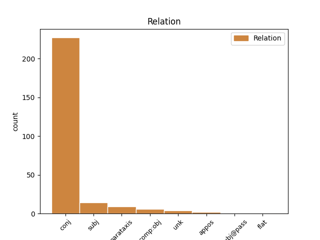
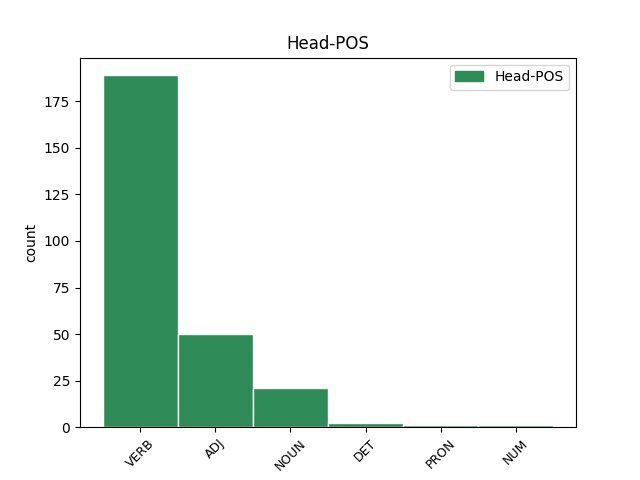
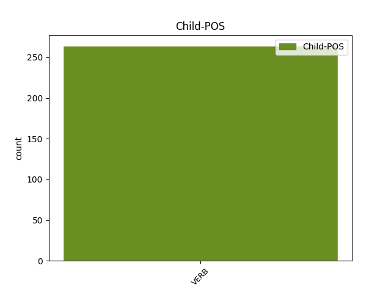

Distribution of features within this leaf



Agreement Rules sorted by frequency.
- When the dependent token is the conjunct(conj) of the head token, and the dependent token is VERB.
1 Protokole _ _ _ _ 0 _ _ _
2 turi _ _ _ _ 0 _ _ _
3 būti _ _ _ _ 0 _ _ _
4 nurodyta _ _ _ _ 0 _ _ _
5 data _ _ _ _ 0 _ _ _
6 , _ _ _ _ 0 _ _ _
7 protokolo _ _ _ _ 0 _ _ _
8 registravimo _ _ _ _ 0 _ _ _
9 numeris _ _ _ _ 0 _ _ _
10 , _ _ _ _ 0 _ _ _
11 Komiteto _ _ _ _ 0 _ _ _
12 posėdžio _ _ _ _ 0 _ _ _
13 dalyviai _ _ _ _ 0 _ _ _
14 , _ _ _ _ 0 _ _ _
15 svarstyti _ _ _ _ 0 _ _ _
16 klausimai _ _ _ _ 0 _ _ _
17 , _ _ _ _ 0 _ _ _
18 kalbėję kalbėti VERB vksm.dlv.veik.būt-k.vyr.dgs.V. Aspect=Perf|Case=Nom|Definite=Ind|Gender=Masc|Number=Plur|Polarity=Pos|Tense=Past|VerbForm=Part|Voice=Act 0 _ _ _
19 bei _ _ _ _ 0 _ _ _
20 klausimus _ _ _ _ 0 _ _ _
21 pateikę pateikti VERB vksm.dlv.veik.būt-k.vyr.dgs.V. Aspect=Perf|Case=Nom|Definite=Ind|Gender=Masc|Number=Plur|Polarity=Pos|Tense=Past|VerbForm=Part|Voice=Act 18 conj _ _
22 asmenys _ _ _ _ 0 _ _ _
23 , _ _ _ _ 0 _ _ _
24 balsavimo _ _ _ _ 0 _ _ _
25 rezultatai _ _ _ _ 0 _ _ _
26 ir _ _ _ _ 0 _ _ _
27 priimti _ _ _ _ 0 _ _ _
28 sprendimai _ _ _ _ 0 _ _ _
29 . _ _ _ _ 0 _ _ _
1 16 _ _ _ _ 0 _ _ _
2 . _ _ _ _ 0 _ _ _
3 Šio _ _ _ _ 0 _ _ _
4 straipsnio _ _ _ _ 0 _ _ _
5 13 _ _ _ _ 0 _ _ _
6 dalyje _ _ _ _ 0 _ _ _
7 nurodytas _ _ _ _ 0 _ _ _
8 koeficientas _ _ _ _ 0 _ _ _
9 kn _ _ _ _ 0 _ _ _
10 laikomas laikyti VERB vksm.dlv.neveik.es.vyr.vns.V. Case=Nom|Definite=Ind|Gender=Masc|Number=Sing|Polarity=Pos|Tense=Pres|VerbForm=Part|Voice=Pass 11 subj _ _
11 lygiu lygus ADJ bdv.nelygin.vyr.vns.Įn. Case=Ins|Definite=Ind|Degree=Pos|Gender=Masc|Number=Sing 0 _ _ _
12 nuliui _ _ _ _ 0 _ _ _
13 , _ _ _ _ 0 _ _ _
14 jei _ _ _ _ 0 _ _ _
15 nuo _ _ _ _ 0 _ _ _
16 25 _ _ _ _ 0 _ _ _
17 iki _ _ _ _ 0 _ _ _
18 50 _ _ _ _ 0 _ _ _
19 procentų _ _ _ _ 0 _ _ _
20 įmonės _ _ _ _ 0 _ _ _
21 akcijų _ _ _ _ 0 _ _ _
22 , _ _ _ _ 0 _ _ _
23 pajų _ _ _ _ 0 _ _ _
24 ar _ _ _ _ 0 _ _ _
25 kitokių _ _ _ _ 0 _ _ _
26 dalyvavimą _ _ _ _ 0 _ _ _
27 įmonės _ _ _ _ 0 _ _ _
28 kapitale _ _ _ _ 0 _ _ _
29 žyminčių _ _ _ _ 0 _ _ _
30 kapitalo _ _ _ _ 0 _ _ _
31 dalių _ _ _ _ 0 _ _ _
32 arba _ _ _ _ 0 _ _ _
33 nuo _ _ _ _ 0 _ _ _
34 25 _ _ _ _ 0 _ _ _
35 iki _ _ _ _ 0 _ _ _
36 50 _ _ _ _ 0 _ _ _
37 procentų _ _ _ _ 0 _ _ _
38 visų _ _ _ _ 0 _ _ _
39 įmonės _ _ _ _ 0 _ _ _
40 dalyvių _ _ _ _ 0 _ _ _
41 balsų _ _ _ _ 0 _ _ _
42 tiesiogiai _ _ _ _ 0 _ _ _
43 ar _ _ _ _ 0 _ _ _
44 netiesiogiai _ _ _ _ 0 _ _ _
45 ( _ _ _ _ 0 _ _ _
46 pagal _ _ _ _ 0 _ _ _
47 balsavimo _ _ _ _ 0 _ _ _
48 sutartį _ _ _ _ 0 _ _ _
49 , _ _ _ _ 0 _ _ _
50 balsavimo _ _ _ _ 0 _ _ _
51 teisės _ _ _ _ 0 _ _ _
52 perleidimo _ _ _ _ 0 _ _ _
53 sutartį _ _ _ _ 0 _ _ _
54 , _ _ _ _ 0 _ _ _
55 įgaliojimą _ _ _ _ 0 _ _ _
56 ir _ _ _ _ 0 _ _ _
57 pan _ _ _ _ 0 _ _ _
58 . _ _ _ _ 0 _ _ _
59 ) _ _ _ _ 0 _ _ _
60 turi _ _ _ _ 0 _ _ _
61 šie _ _ _ _ 0 _ _ _
62 investuotojai _ _ _ _ 0 _ _ _
63 : _ _ _ _ 0 _ _ _
64 1 _ _ _ _ 0 _ _ _
65 ) _ _ _ _ 0 _ _ _
66 valdymo _ _ _ _ 0 _ _ _
67 įmonės _ _ _ _ 0 _ _ _
68 ar _ _ _ _ 0 _ _ _
69 investicinės _ _ _ _ 0 _ _ _
70 bendrovės _ _ _ _ 0 _ _ _
71 , _ _ _ _ 0 _ _ _
72 investuojančios _ _ _ _ 0 _ _ _
73 į _ _ _ _ 0 _ _ _
74 įmones _ _ _ _ 0 _ _ _
75 rizikos _ _ _ _ 0 _ _ _
76 kapitalo _ _ _ _ 0 _ _ _
77 kolektyvinio _ _ _ _ 0 _ _ _
78 investavimo _ _ _ _ 0 _ _ _
79 subjektų _ _ _ _ 0 _ _ _
80 lėšas _ _ _ _ 0 _ _ _
81 , _ _ _ _ 0 _ _ _
82 ir _ _ _ _ 0 _ _ _
83 neformalieji _ _ _ _ 0 _ _ _
84 investuotojai _ _ _ _ 0 _ _ _
85 , _ _ _ _ 0 _ _ _
86 jei _ _ _ _ 0 _ _ _
87 šių _ _ _ _ 0 _ _ _
88 investuotojų _ _ _ _ 0 _ _ _
89 bendra _ _ _ _ 0 _ _ _
90 investicijų _ _ _ _ 0 _ _ _
91 į _ _ _ _ 0 _ _ _
92 tą _ _ _ _ 0 _ _ _
93 pačią _ _ _ _ 0 _ _ _
94 įmonę _ _ _ _ 0 _ _ _
95 suma _ _ _ _ 0 _ _ _
96 ne _ _ _ _ 0 _ _ _
97 didesnė _ _ _ _ 0 _ _ _
98 kaip _ _ _ _ 0 _ _ _
99 4,3 _ _ _ _ 0 _ _ _
100 mln _ _ _ _ 0 _ _ _
101 . _ _ _ _ 0 _ _ _
102 litų _ _ _ _ 0 _ _ _
103 ; _ _ _ _ 0 _ _ _
104 2 _ _ _ _ 0 _ _ _
105 ) _ _ _ _ 0 _ _ _
106 mokslo _ _ _ _ 0 _ _ _
107 ir _ _ _ _ 0 _ _ _
108 studijų _ _ _ _ 0 _ _ _
109 institucijos _ _ _ _ 0 _ _ _
110 , _ _ _ _ 0 _ _ _
111 kurios _ _ _ _ 0 _ _ _
112 Lietuvos _ _ _ _ 0 _ _ _
113 Respublikos _ _ _ _ 0 _ _ _
114 įstatymų _ _ _ _ 0 _ _ _
115 nustatyta _ _ _ _ 0 _ _ _
116 tvarka _ _ _ _ 0 _ _ _
117 gali _ _ _ _ 0 _ _ _
118 investuoti _ _ _ _ 0 _ _ _
119 turtą _ _ _ _ 0 _ _ _
120 ; _ _ _ _ 0 _ _ _
121 3 _ _ _ _ 0 _ _ _
122 ) _ _ _ _ 0 _ _ _
123 profesionalieji _ _ _ _ 0 _ _ _
124 investuotojai _ _ _ _ 0 _ _ _
125 , _ _ _ _ 0 _ _ _
126 išskyrus _ _ _ _ 0 _ _ _
127 valstybių _ _ _ _ 0 _ _ _
128 centrines _ _ _ _ 0 _ _ _
129 ir _ _ _ _ 0 _ _ _
130 regionines _ _ _ _ 0 _ _ _
131 valdžios _ _ _ _ 0 _ _ _
132 institucijas _ _ _ _ 0 _ _ _
133 ; _ _ _ _ 0 _ _ _
134 4 _ _ _ _ 0 _ _ _
135 ) _ _ _ _ 0 _ _ _
136 savivaldybės _ _ _ _ 0 _ _ _
137 , _ _ _ _ 0 _ _ _
138 kurių _ _ _ _ 0 _ _ _
139 metinis _ _ _ _ 0 _ _ _
140 biudžetas _ _ _ _ 0 _ _ _
141 mažesnis _ _ _ _ 0 _ _ _
142 kaip _ _ _ _ 0 _ _ _
143 34,5 _ _ _ _ 0 _ _ _
144 mln _ _ _ _ 0 _ _ _
145 . _ _ _ _ 0 _ _ _
146 litų _ _ _ _ 0 _ _ _
147 ir _ _ _ _ 0 _ _ _
148 kurių _ _ _ _ 0 _ _ _
149 teritorijoje _ _ _ _ 0 _ _ _
150 gyvena _ _ _ _ 0 _ _ _
151 mažiau _ _ _ _ 0 _ _ _
152 kaip _ _ _ _ 0 _ _ _
153 5 _ _ _ _ 0 _ _ _
154 tūkstančiai _ _ _ _ 0 _ _ _
155 gyventojų _ _ _ _ 0 _ _ _
156 . _ _ _ _ 0 _ _ _
1 2006 _ _ _ _ 0 _ _ _
2 m _ _ _ _ 0 _ _ _
3 . _ _ _ _ 0 _ _ _
4 suderinta _ _ _ _ 0 _ _ _
5 20 _ _ _ _ 0 _ _ _
6 įstatymų _ _ _ _ 0 _ _ _
7 , _ _ _ _ 0 _ _ _
8 34 _ _ _ _ 0 _ _ _
9 Vyriausybės _ _ _ _ 0 _ _ _
10 nutarimų _ _ _ _ 0 _ _ _
11 , _ _ _ _ 0 _ _ _
12 19 _ _ _ _ 0 _ _ _
13 duomenų _ _ _ _ 0 _ _ _
14 valdytojų _ _ _ _ 0 _ _ _
15 pateiktų _ _ _ _ 0 _ _ _
16 dokumentų _ _ _ _ 0 _ _ _
17 , _ _ _ _ 0 _ _ _
18 68 _ _ _ _ 0 _ _ _
19 kitų _ _ _ _ 0 _ _ _
20 teisės _ _ _ _ 0 _ _ _
21 aktų _ _ _ _ 0 _ _ _
22 projektų _ _ _ _ 0 _ _ _
23 , _ _ _ _ 0 _ _ _
24 pateikti _ _ _ _ 0 _ _ _
25 4 _ _ _ _ 0 _ _ _
26 pasiūlymai _ _ _ _ 0 _ _ _
27 kitoms _ _ _ _ 0 _ _ _
28 institucijoms _ _ _ _ 0 _ _ _
29 dėl _ _ _ _ 0 _ _ _
30 teisės _ _ _ _ 0 _ _ _
31 aktų _ _ _ _ 0 _ _ _
32 rengimo _ _ _ _ 0 _ _ _
33 , _ _ _ _ 0 _ _ _
34 keitimo _ _ _ _ 0 _ _ _
35 , _ _ _ _ 0 _ _ _
36 pripažinimo pripažinimas NOUN dkt.vyr.vns.K. Case=Gen|Gender=Masc|Number=Sing 0 _ _ _
37 netekusiais netekti VERB vksm.dlv.neig.veik.būt-k.vyr.dgs.Įn. Aspect=Perf|Case=Ins|Definite=Ind|Gender=Masc|Number=Plur|Polarity=Neg|Tense=Past|VerbForm=Part|Voice=Act 36 comp:obj _ _
38 galios _ _ _ _ 0 _ _ _
39 . _ _ _ _ 0 _ _ _
1 Taip _ _ _ _ 0 _ _ _
2 pat _ _ _ _ 0 _ _ _
3 matavome _ _ _ _ 0 _ _ _
4 tuos _ _ _ _ 0 _ _ _
5 pačius _ _ _ _ 0 _ _ _
6 išskaičiuotos _ _ _ _ 0 _ _ _
7 bangos banga NOUN dkt.mot.vns.K. Case=Gen|Gender=Fem|Number=Sing 0 _ _ _
8 ( _ _ _ _ 0 _ _ _
9 gaunama gauti VERB vksm.dlv.neveik.es.mot.vns.V. Case=Nom|Definite=Ind|Gender=Fem|Number=Sing|Polarity=Pos|Tense=Pres|VerbForm=Part|Voice=Pass 7 parataxis _ _
10 iš _ _ _ _ 0 _ _ _
11 atsako _ _ _ _ 0 _ _ _
12 į _ _ _ _ 0 _ _ _
13 nereikšmingus _ _ _ _ 0 _ _ _
14 dirgiklius _ _ _ _ 0 _ _ _
15 kreivės _ _ _ _ 0 _ _ _
16 skaitmeniniu _ _ _ _ 0 _ _ _
17 būdu _ _ _ _ 0 _ _ _
18 atimant _ _ _ _ 0 _ _ _
19 atsako _ _ _ _ 0 _ _ _
20 į _ _ _ _ 0 _ _ _
21 reikšmingus _ _ _ _ 0 _ _ _
22 dirgiklius _ _ _ _ 0 _ _ _
23 kreivę _ _ _ _ 0 _ _ _
24 ) _ _ _ _ 0 _ _ _
25 parametrus _ _ _ _ 0 _ _ _
26 , _ _ _ _ 0 _ _ _
27 žymimus _ _ _ _ 0 _ _ _
28 sSDS _ _ _ _ 0 _ _ _
29 , _ _ _ _ 0 _ _ _
30 sA _ _ _ _ 0 _ _ _
31 ir _ _ _ _ 0 _ _ _
32 sB _ _ _ _ 0 _ _ _
33 . _ _ _ _ 0 _ _ _
1 2 _ _ _ _ 0 _ _ _
2 ) _ _ _ _ 0 _ _ _
3 Planuota _ _ _ _ 0 _ _ _
4 atlikti _ _ _ _ 0 _ _ _
5 400 _ _ _ _ 0 _ _ _
6 prevencinių _ _ _ _ 0 _ _ _
7 tikrinimų _ _ _ _ 0 _ _ _
8 ir _ _ _ _ 0 _ _ _
9 parengti _ _ _ _ 0 _ _ _
10 išvadų _ _ _ _ 0 _ _ _
11 dėl _ _ _ _ 0 _ _ _
12 išankstinės _ _ _ _ 0 _ _ _
13 patikros _ _ _ _ 0 _ _ _
14 – _ _ _ _ 0 _ _ _
15 atlikta atlikti VERB vksm.dlv.neveik.būt.bev. Definite=Ind|Gender=Neut|Polarity=Pos|Tense=Past|VerbForm=Part|Voice=Pass 0 _ _ _
16 402 _ _ _ _ 0 _ _ _
17 ( _ _ _ _ 0 _ _ _
18 parengta parengti VERB vksm.dlv.neveik.būt.bev. Definite=Ind|Gender=Neut|Polarity=Pos|Tense=Past|VerbForm=Part|Voice=Pass 15 unk _ _
19 310 _ _ _ _ 0 _ _ _
20 išvadų _ _ _ _ 0 _ _ _
21 dėl _ _ _ _ 0 _ _ _
22 išankstinės _ _ _ _ 0 _ _ _
23 patikros _ _ _ _ 0 _ _ _
24 , _ _ _ _ 0 _ _ _
25 atlikti _ _ _ _ 0 _ _ _
26 92 _ _ _ _ 0 _ _ _
27 prevenciniai _ _ _ _ 0 _ _ _
28 tikrinimai _ _ _ _ 0 _ _ _
29 ) _ _ _ _ 0 _ _ _
30 . _ _ _ _ 0 _ _ _
1 Kita _ _ _ _ 0 _ _ _
2 vertus _ _ _ _ 0 _ _ _
3 , _ _ _ _ 0 _ _ _
4 griežtai _ _ _ _ 0 _ _ _
5 laikantis _ _ _ _ 0 _ _ _
6 statistinio _ _ _ _ 0 _ _ _
7 reprezentatyvumo _ _ _ _ 0 _ _ _
8 , _ _ _ _ 0 _ _ _
9 viename _ _ _ _ 0 _ _ _
10 tyrime _ _ _ _ 0 _ _ _
11 imti imti VERB vksm.dlv.neveik.būt.vyr.dgs.V. Case=Nom|Definite=Ind|Gender=Masc|Number=Plur|Polarity=Pos|Tense=Past|VerbForm=Part|Voice=Pass 0 _ _ _
12 emigracijoje _ _ _ _ 0 _ _ _
13 buvusieji būti VERB vksm.dlv.veik.būt-k.įvardž.vyr.dgs.V. Aspect=Perf|Case=Nom|Definite=Def|Gender=Masc|Number=Plur|Polarity=Pos|Tense=Past|VerbForm=Part|Voice=Act 11 subj@pass _ _
14 metus _ _ _ _ 0 _ _ _
15 ir _ _ _ _ 0 _ _ _
16 daugiau _ _ _ _ 0 _ _ _
17 , _ _ _ _ 0 _ _ _
18 visuose _ _ _ _ 0 _ _ _
19 kituose _ _ _ _ 0 _ _ _
20 – _ _ _ _ 0 _ _ _
21 pusę _ _ _ _ 0 _ _ _
22 metų _ _ _ _ 0 _ _ _
23 . _ _ _ _ 0 _ _ _
1 Paliekant _ _ _ _ 0 _ _ _
2 galimybes _ _ _ _ 0 _ _ _
3 tiriamajam tirti VERB vksm.dlv.neveik.es.įvardž.vyr.vns.N. Case=Dat|Definite=Def|Gender=Masc|Number=Sing|Polarity=Pos|Tense=Pres|VerbForm=Part|Voice=Pass 0 _ _ _
4 ( _ _ _ _ 0 _ _ _
5 tiriamiesiems tirti VERB vksm.dlv.neveik.es.įvardž.vyr.dgs.N. Case=Dat|Definite=Def|Gender=Masc|Number=Plur|Polarity=Pos|Tense=Pres|VerbForm=Part|Voice=Pass 3 flat _ SpaceAfter=No
6 ) _ _ _ _ 0 _ _ _
7 konstruoti _ _ _ _ 0 _ _ _
8 / _ _ _ _ 0 _ _ _
9 rekonstruoti _ _ _ _ 0 _ _ _
10 kuriamą _ _ _ _ 0 _ _ _
11 šeimos _ _ _ _ 0 _ _ _
12 modelį _ _ _ _ 0 _ _ _
13 , _ _ _ _ 0 _ _ _
14 gaunama _ _ _ _ 0 _ _ _
15 informacija _ _ _ _ 0 _ _ _
16 apie _ _ _ _ 0 _ _ _
17 individualias _ _ _ _ 0 _ _ _
18 šeiminio _ _ _ _ 0 _ _ _
19 gyvenimo _ _ _ _ 0 _ _ _
20 koncepcijas _ _ _ _ 0 _ _ _
21 , _ _ _ _ 0 _ _ _
22 o _ _ _ _ 0 _ _ _
23 tai _ _ _ _ 0 _ _ _
24 leidžia _ _ _ _ 0 _ _ _
25 spręsti _ _ _ _ 0 _ _ _
26 apie _ _ _ _ 0 _ _ _
27 jų _ _ _ _ 0 _ _ _
28 atitikimą _ _ _ _ 0 _ _ _
29 ( _ _ _ _ 0 _ _ _
30 ar _ _ _ _ 0 _ _ _
31 neatitikimą _ _ _ _ 0 _ _ _
32 ) _ _ _ _ 0 _ _ _
33 normatyvinei _ _ _ _ 0 _ _ _
34 sampratai _ _ _ _ 0 _ _ _
35 . _ _ _ _ 0 _ _ _
Disagree Examples:
1 Deja _ _ _ _ 0 _ _ _
2 , _ _ _ _ 0 _ _ _
3 trinaris _ _ _ _ 0 _ _ _
4 modelis _ _ _ _ 0 _ _ _
5 turi _ _ _ _ 0 _ _ _
6 nemažai _ _ _ _ 0 _ _ _
7 trūkumų _ _ _ _ 0 _ _ _
8 : _ _ _ _ 0 _ _ _
9 pirma _ _ _ _ 0 _ _ _
10 , _ _ _ _ 0 _ _ _
11 skirtingos _ _ _ _ 0 _ _ _
12 grupuotės _ _ _ _ 0 _ _ _
13 LKP _ _ _ _ 0 _ _ _
14 ir _ _ _ _ 0 _ _ _
15 Sąjūdyje _ _ _ _ 0 _ _ _
16 tarsi _ _ _ _ 0 _ _ _
17 neišvengiamai _ _ _ _ 0 _ _ _
18 priskiriamos priskirti VERB vksm.dlv.neveik.es.mot.dgs.V. Case=Nom|Definite=Ind|Gender=Fem|Number=Plur|Polarity=Pos|Tense=Pres|VerbForm=Part|Voice=Pass 0 _ _ _
19 šiose _ _ _ _ 0 _ _ _
20 organizacijose _ _ _ _ 0 _ _ _
21 dominuojančiai _ _ _ _ 0 _ _ _
22 daugumai _ _ _ _ 0 _ _ _
23 , _ _ _ _ 0 _ _ _
24 antra _ _ _ _ 0 _ _ _
25 , _ _ _ _ 0 _ _ _
26 pasakojime _ _ _ _ 0 _ _ _
27 neminimi neminėti VERB vksm.dlv.neig.neveik.es.vyr.dgs.V. Case=Nom|Definite=Ind|Gender=Masc|Number=Plur|Polarity=Neg|Tense=Pres|VerbForm=Part|Voice=Pass 18 conj _ _
28 Sąjūdžio _ _ _ _ 0 _ _ _
29 ir _ _ _ _ 0 _ _ _
30 naujai _ _ _ _ 0 _ _ _
31 besikuriančių _ _ _ _ 0 _ _ _
32 , _ _ _ _ 0 _ _ _
33 kartais _ _ _ _ 0 _ _ _
34 su _ _ _ _ 0 _ _ _
35 Sąjūdžiu _ _ _ _ 0 _ _ _
36 tiesiogiai _ _ _ _ 0 _ _ _
37 nieko _ _ _ _ 0 _ _ _
38 bendra _ _ _ _ 0 _ _ _
39 neturinčių _ _ _ _ 0 _ _ _
40 , _ _ _ _ 0 _ _ _
41 politinių _ _ _ _ 0 _ _ _
42 organizacijų _ _ _ _ 0 _ _ _
43 santykiai _ _ _ _ 0 _ _ _
44 . _ _ _ _ 0 _ _ _
1 Keista _ _ _ _ 0 _ _ _
2 , _ _ _ _ 0 _ _ _
3 kodėl _ _ _ _ 0 _ _ _
4 socialinės _ _ _ _ 0 _ _ _
5 Sąjūdžio _ _ _ _ 0 _ _ _
6 analizės _ _ _ _ 0 _ _ _
7 buvo _ _ _ _ 0 _ _ _
8 sąmoningai _ _ _ _ 0 _ _ _
9 atsisakyta atsisakyti VERB vksm.dlv.sngr.neveik.būt.bev. Definite=Ind|Gender=Neut|Polarity=Pos|Reflex=Yes|Tense=Past|VerbForm=Part|Voice=Pass 0 _ _ _
10 , _ _ _ _ 0 _ _ _
11 LPS _ _ _ _ 0 _ _ _
12 struktūros _ _ _ _ 0 _ _ _
13 raida _ _ _ _ 0 _ _ _
14 , _ _ _ _ 0 _ _ _
15 vidaus _ _ _ _ 0 _ _ _
16 santykiai _ _ _ _ 0 _ _ _
17 tarp _ _ _ _ 0 _ _ _
18 atskirų _ _ _ _ 0 _ _ _
19 Sąjūdžio _ _ _ _ 0 _ _ _
20 dalių _ _ _ _ 0 _ _ _
21 , _ _ _ _ 0 _ _ _
22 organizacinė _ _ _ _ 0 _ _ _
23 , _ _ _ _ 0 _ _ _
24 finansinė _ _ _ _ 0 _ _ _
25 ir _ _ _ _ 0 _ _ _
26 leidybinė _ _ _ _ 0 _ _ _
27 veikla _ _ _ _ 0 _ _ _
28 beveik _ _ _ _ 0 _ _ _
29 neaprašyta neaprašyti VERB vksm.dlv.neig.neveik.būt.mot.vns.V. Case=Nom|Definite=Ind|Gender=Fem|Number=Sing|Polarity=Neg|Tense=Past|VerbForm=Part|Voice=Pass 9 conj _ SpaceAfter=No
30 . _ _ _ _ 0 _ _ _
1 Normalus _ _ _ _ 0 _ _ _
2 XX _ _ _ _ 0 _ _ _
3 a _ _ _ _ 0 _ _ _
4 . _ _ _ _ 0 _ _ _
5 pabaigos _ _ _ _ 0 _ _ _
6 Lietuvos _ _ _ _ 0 _ _ _
7 istorijos _ _ _ _ 0 _ _ _
8 šaltinių _ _ _ _ 0 _ _ _
9 rinkimas _ _ _ _ 0 _ _ _
10 , _ _ _ _ 0 _ _ _
11 jų _ _ _ _ 0 _ _ _
12 saugojimas _ _ _ _ 0 _ _ _
13 ir _ _ _ _ 0 _ _ _
14 aprašymas _ _ _ _ 0 _ _ _
15 ne _ _ _ _ 0 _ _ _
16 tik _ _ _ _ 0 _ _ _
17 kad _ _ _ _ 0 _ _ _
18 nėra _ _ _ _ 0 _ _ _
19 patenkinamas _ _ _ _ 0 _ _ _
20 , _ _ _ _ 0 _ _ _
21 jis _ _ _ _ 0 _ _ _
22 , _ _ _ _ 0 _ _ _
23 galima galėti VERB vksm.dlv.neveik.es.bev. Definite=Ind|Gender=Neut|Polarity=Pos|Tense=Pres|VerbForm=Part|Voice=Pass 29 parataxis _ _
24 sakyti _ _ _ _ 0 _ _ _
25 , _ _ _ _ 0 _ _ _
26 nėra _ _ _ _ 0 _ _ _
27 net _ _ _ _ 0 _ _ _
28 normaliai _ _ _ _ 0 _ _ _
29 prasidėjęs prasidėti VERB vksm.dlv.sngr.veik.būt-k.vyr.vns.V. Aspect=Perf|Case=Nom|Definite=Ind|Gender=Masc|Number=Sing|Polarity=Pos|Reflex=Yes|Tense=Past|VerbForm=Part|Voice=Act 0 _ _ _
30 . _ _ _ _ 0 _ _ _
1 Taip _ _ _ _ 0 _ _ _
2 pat _ _ _ _ 0 _ _ _
3 galima _ _ _ _ 0 _ _ _
4 pasigesti _ _ _ _ 0 _ _ _
5 paaiškinimo _ _ _ _ 0 _ _ _
6 , _ _ _ _ 0 _ _ _
7 kodėl _ _ _ _ 0 _ _ _
8 autorių _ _ _ _ 0 _ _ _
9 interviu _ _ _ _ 0 _ _ _
10 imti imti VERB vksm.dlv.neveik.būt.vyr.dgs.V. Case=Nom|Definite=Ind|Gender=Masc|Number=Plur|Polarity=Pos|Tense=Past|VerbForm=Part|Voice=Pass 0 _ _ _
11 iš _ _ _ _ 0 _ _ _
12 A _ _ _ _ 0 _ _ _
13 . _ _ _ _ 0 _ _ _
14 Brazausko _ _ _ _ 0 _ _ _
15 ir _ _ _ _ 0 _ _ _
16 L _ _ _ _ 0 _ _ _
17 . _ _ _ _ 0 _ _ _
18 Šepečio _ _ _ _ 0 _ _ _
19 , _ _ _ _ 0 _ _ _
20 o _ _ _ _ 0 _ _ _
21 su _ _ _ _ 0 _ _ _
22 V _ _ _ _ 0 _ _ _
23 . _ _ _ _ 0 _ _ _
24 Landsbergiu _ _ _ _ 0 _ _ _
25 ir _ _ _ _ 0 _ _ _
26 jo _ _ _ _ 0 _ _ _
27 artimiausiais _ _ _ _ 0 _ _ _
28 bendražygiais _ _ _ _ 0 _ _ _
29 to _ _ _ _ 0 _ _ _
30 padaryti _ _ _ _ 0 _ _ _
31 nesiteikta nesiteikti VERB vksm.dlv.neig.sngr.neveik.būt.bev. Definite=Ind|Gender=Neut|Polarity=Neg|Reflex=Yes|Tense=Past|VerbForm=Part|Voice=Pass 10 conj _ SpaceAfter=No
32 . _ _ _ _ 0 _ _ _
1 1990 _ _ _ _ 0 _ _ _
2 m _ _ _ _ 0 _ _ _
3 . _ _ _ _ 0 _ _ _
4 buvo _ _ _ _ 0 _ _ _
5 parengtas parengti VERB vksm.dlv.neveik.būt.vyr.vns.V. Case=Nom|Definite=Ind|Gender=Masc|Number=Sing|Polarity=Pos|Tense=Past|VerbForm=Part|Voice=Pass 0 _ _ _
6 bažnyčios _ _ _ _ 0 _ _ _
7 atnaujinimo _ _ _ _ 0 _ _ _
8 projektas _ _ _ _ 0 _ _ _
9 , _ _ _ _ 0 _ _ _
10 tačiau _ _ _ _ 0 _ _ _
11 negavus _ _ _ _ 0 _ _ _
12 finansavimo _ _ _ _ 0 _ _ _
13 ji _ _ _ _ 0 _ _ _
14 taip _ _ _ _ 0 _ _ _
15 ir _ _ _ _ 0 _ _ _
16 liko _ _ _ _ 0 _ _ _
17 dešimtmečius _ _ _ _ 0 _ _ _
18 apleista apleisti VERB vksm.dlv.neveik.būt.mot.vns.V. Case=Nom|Definite=Ind|Gender=Fem|Number=Sing|Polarity=Pos|Tense=Past|VerbForm=Part|Voice=Pass 5 conj _ SpaceAfter=No
19 . _ _ _ _ 0 _ _ _